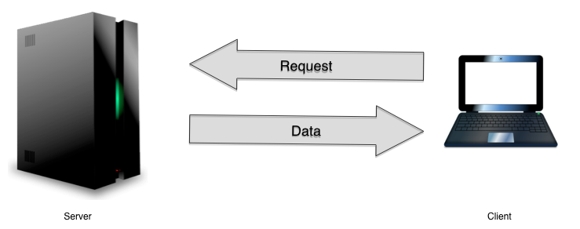
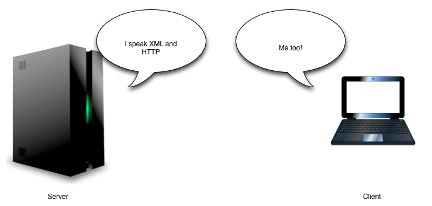
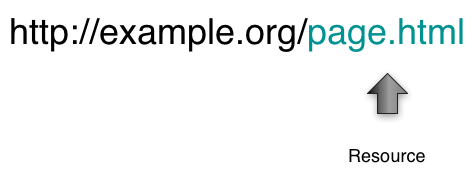

A web service is a method of communication between two electronic devices over the web.
The cilent submits requests, and the server responds with data.
In order to successfully communicate with each other, the server and client need to understand each other.
Clients must send requests in a format the server understands.
Servers must send responses to those requests using a format the client is designed to understand.
Servers will support one or more styles of web service, and clients will conform accordingly.
Resources are things; e.g. nouns rather than verbs.
If your system is a social network, then your resources are:
And, if your system is the Pipeline, then your resources are:
Resource descriptions may include links to other related resources.
The Pipeline is composed of resources: scripts and jobs.
Client applications must be able to:
Notice the boldface words above, which emphasize the action (get/post) and resource (script/job/status/result).
URLs identify resources in the system.
Clients send requests using URLs to identify the resource they want.
Primary resources in the Pipeline:
Corresponding URLs:
http://example.org/scriptshttp://example.org/jobshttp://example.org/scripts/dtbook-to-zedaihttp://example.org/jobs/4A8E3-C93D0-1FD3BClients send requests using HTTP methods to identify the action they want to perform.
Client: May I have a list of all the available scripts?
Server: Why of course. Here is a list of all my available scripts. Let me know if you need anything else.
Client request: GET http://example.org/scripts
Server response:
HTTP 200 OK
<scripts href="http://example.org/scripts">
<script id="zedai-to-epub3" href="http://example.org/scripts/zedai-to-epub3">
<nicename>ZedAI to EPUB3</nicename>
<description>Transforms a ZedAI (DAISY 4 XML) document into an EPUB 3
publication.</description>
</script>
<script id="dtbook-to-zedai" href="http://example.org/scripts/dtbook-to-zedai">
<nicename>DTBook to ZedAI</nicename>
<description>Transforms DTBook XML into ZedAI XML.</description>
</script>
<script id="daisy202-to-epub3" href="http://example.org/scripts/daisy202-to-epub3">
<nicename>DAISY 2.02 to EPUB3</nicename>
<description>Transforms a DAISY 2.02-book into an EPUB3-book.</description>
</script>
</scripts>
Client: I'd like to know more about the DTBook to ZedAI script.
Server: Here is all the information you need to execute this script.
Client request: GET http://example.org/scripts/dtbook-to-zedai
Server response:
HTTP 200 OK
<script xmlns="http://www.daisy.org/ns/pipeline/data"
id="dtbook-to-zedai"
href="http://example.org/scripts/dtbook-to-zedai">
<nicename>DTBook to ZedAI</nicename>
<description>Transforms DTBook XML into ZedAI XML.</description>
<homepage>http://code.google.com/p/daisy-pipeline/wiki/DTBookToZedAI</homepage>
<input desc="One or more DTBook files to be transformed. In the case of multiple files, a merge will be performed."
mediaType="application/x-dtbook+xml"
name="source"
sequenceAllowed="true"/>
<option desc="Filename for the generated MODS file" mediaType="" name="opt-mods-filename" required="false" type="string"/>
<option desc="Filename for the generated CSS file" mediaType="" name="opt-css-filename" required="false" type="string"/>
<option desc="Filename for the generated ZedAI file" mediaType="" name="opt-zedai-filename" required="false" type="string"/>
</script>
Client: Please transform this DTBook file to ZedAI
Server: Thank you. Here is information about your new job.
Client request:
POST http://example.org/jobs
<jobRequest>
...
</jobRequest>We'll look at the details of the request body XML in the next slide.
Server response:
HTTP 201 Created
<job id="job-id-01" href="http://example.org/jobs/job-id-01" status="RUNNING">
<script id="dtbook-to-zedai" href="http://example.org/scripts/dtbook-to-zedai">
<nicename>DTBook to ZedAI</nicename>
<description>Transforms DTBook XML into ZedAI XML.</description>
</script>
<messages>
<message level="WARNING" sequence="22">Warning about this job</message>
</messages>
</job>
Along with their POST request, the client supplies an XML document based on the script's parameters:
<jobRequest>
<script href='http://example.org/scripts/dtbook-to-zedai'/>
<input name='source'>
<docwrapper>
<dtbook xmlns='http://www.daisy.org/z3986/2005/dtbook/' version='2005-3' xml:lang='en-US'>
<head>...</head>
<book>
...
<bodymatter>
<level1>
<h1>Introduction</h1>
<p><sent>The DAISY Pipeline 2 is an ongoing project to develop a next generation framework for automated production of accessible materials for people with print disabilities.</sent><sent>It is the follow-up and total redesign of the original DAISY Pipeline 1 project.</sent></p>
</level1>
</bodymatter>
</book>
</dtbook>
</docwrapper>
</input>
</jobRequest>
In another scenario, the client wants to submit a fileset, not just an inline DTBook document, so the client sends a multipart request.
Client request:
POST http://example.org/jobs
Part 1: 'job-request'
<jobRequest>
<script href='http://example.org/scripts/dtbook-to-zedai'/>
<input name='source'>
<file src='./dtbook-basic.xml'/>
</input>
</jobRequest>
Part 2: 'job-data'
Attached zip file containing all data including the DTBook file.
The <file> element above references the DTBook file inside the zip archive. Other files in the zip archive will be images and resources used by the DTBook input file.
These resources will be included in the job result fileset in order to preserve image references etc.
Remember the job's URL, which was sent by the server when the job was created (e.g. http://example.org/jobs/job-id-01)? Use it to get current information about the job.
Client request: GET http://example.org/jobs/job-id-01
Server response:
<job id="job-id-01" href="http://example.org/jobs/job-id-01" status="DONE">
<script id="dtbook-to-zedai" href="http://example.org/scripts/dtbook-to-zedai">
<nicename>DTBook to ZedAI</nicename>
<description>Transforms DTBook XML into ZedAI XML.</description>
</script>
<messages>
<message level="WARNING" sequence="22">Warning about this job</message>
</messages>
<log href="http://example.org/jobs/job-id-01/log"/>
<result href="http://example.org/jobs/job-id-01/result"/>
</job>
Possible status codes are: IDLE, RUNNING, ERROR, and DONE
Use the results URL to get a zip archive containing the job's results.
Results are available when a job is DONE.
Client request: GET http://example.org/jobs/job-id-01/result
Server response: Zip archive containing the transformed fileset
Allow requests only from authenticated clients.
Remember that clients are other pieces of software, not human users.
The sysadmin issues authentication IDs and secret codes to client application developers.
Then the sysadmin uses the Pipeline's command-line administrative interface to add a record for this new client.
When the client issues a request, it must include its ID in order to identify itself.
GET http://example.org/scripts?authid=myclientIt also must include a timestamp and a "nonce" to uniquely identify the request.
GET http://example.org/scripts?authid=myclient&time=2012-02-09T02:23:40Z&nonce=533473712461604713238933268313Finally, the client uses its secret to generate a hash from the entire request string, and then it must append the hash signature to the request string.
GET http://example.org/ws/scripts?authid=myclient&time=2012-02-09T02:23:40Z&nonce=533473712461604713238933268313&sign=gq%2FlpIuWqEDjhWviAjyccNTzdZk%3DAPI docs and sample clients are available. The official Pipeline CLI is itself a client, written in Ruby.
For the tutorial sessions tomorrrow, we've prepared code snippets to expediate various tasks (e.g. authentication, submitting multipart requests).
Everything can be found by browsing the wiki and source code, available from
http://daisy-pipeline.googlecode.comNotifications will inform the client when a job is completed, or if it ended in error, without the client having to constantly poll the server.
Different approaches for notifications:
/
#